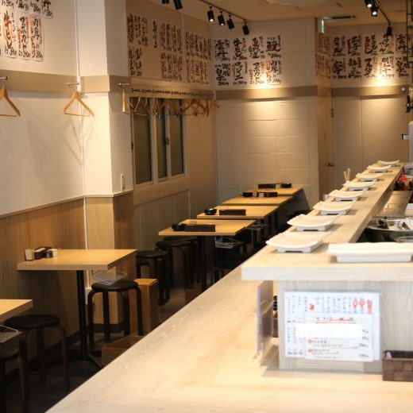
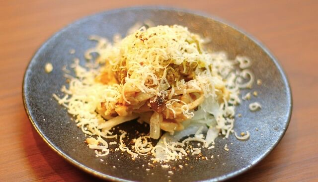
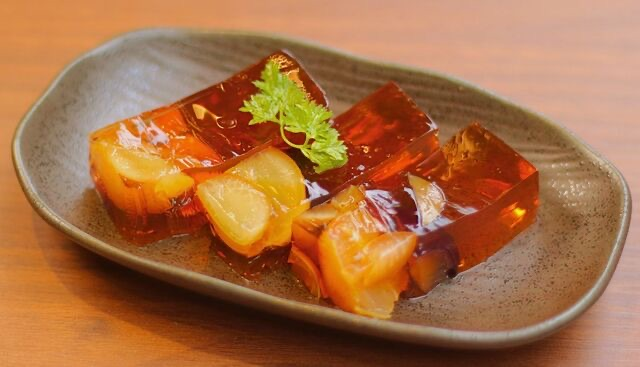
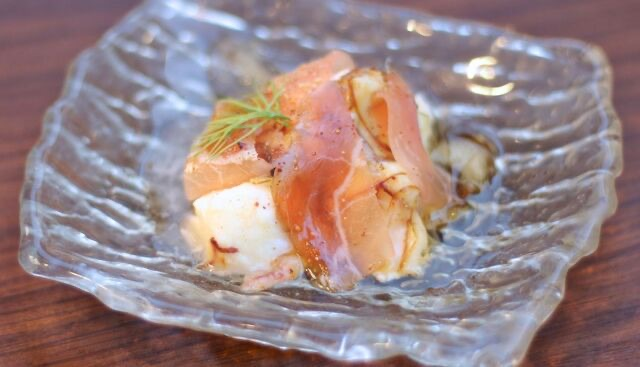
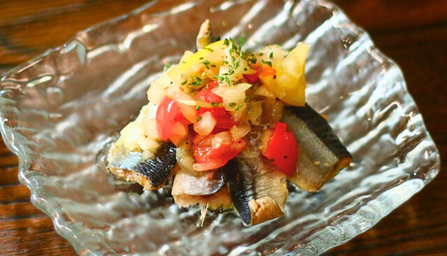
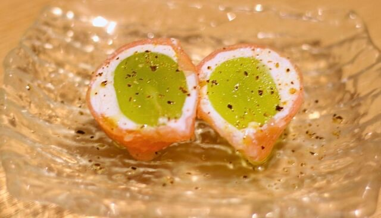
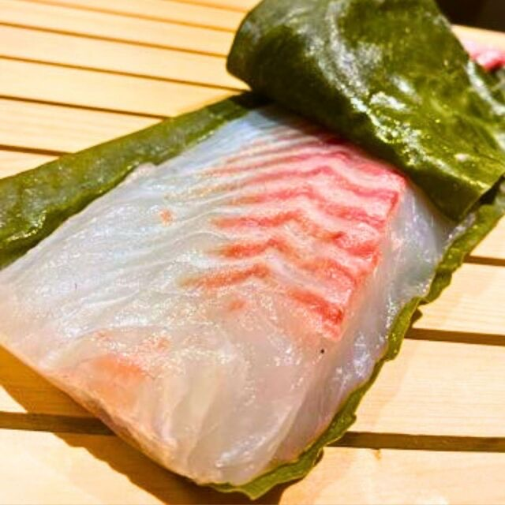
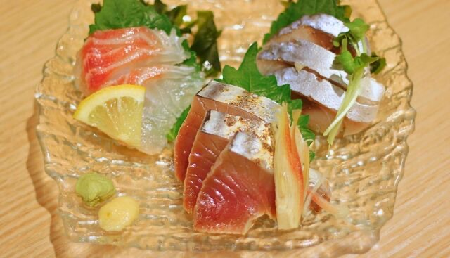
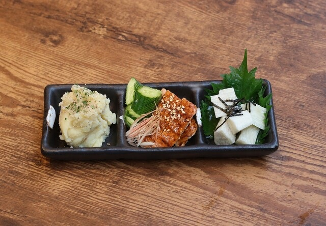

 Tenma Area
Tenma Area
Tenma Ichiba
Seasonal Highlights at Tenma Ichiba

Autumn Mushroom Salad ~ Basil & Parmigiano ~¥429
Muscat & Kyoho Grape Tea Terrine¥539 Sanma Aburi Sashi (Seared Pacific Saury Sashimi)¥539
Sanma Aburi Sashi (Seared Pacific Saury Sashimi)¥539 Seared Bonito Tataki¥649
Seared Bonito Tataki¥649
Frozen Fig, Prosciutto & Mozzarella¥539
Sanma no Fresh Marinade (Pacific Saury Marinade)¥539 Sanma ~Ume Shiso Maki~ (Pacific Saury with Plum & Shiso)¥429
Sanma ~Ume Shiso Maki~ (Pacific Saury with Plum & Shiso)¥429 Ichijiku ~Gorgonzola~ (Fig & Gorgonzola Tempura)¥429
Ichijiku ~Gorgonzola~ (Fig & Gorgonzola Tempura)¥429
Muscat & Cheese Wrapped in Prosciutto¥429
Tai Kombujime Zukuri (Sea Bream Marinated with Kelp Sashimi)¥649
Otsukuri Sanshu Mori (Three Kinds of Sashimi Platter)¥1,089
Assorted Appetizer Small Dishes¥759Autumn Mushroom Salad ~ Basil & Parmigiano ~¥429Muscat & Kyoho Grape Tea Terrine¥539Sanma Aburi Sashi (Seared Pacific Saury Sashimi)¥539Seared Bonito Tataki¥649Frozen Fig, Prosciutto & Mozzarella¥539Sanma no Fresh Marinade (Pacific Saury Marinade)¥539Sanma ~Ume Shiso Maki~ (Pacific Saury with Plum & Shiso)¥429Ichijiku ~Gorgonzola~ (Fig & Gorgonzola Tempura)¥429Muscat & Cheese Wrapped in Prosciutto¥429Tai Kombujime Zukuri (Sea Bream Marinated with Kelp Sashimi)¥649Otsukuri Sanshu Mori (Three Kinds of Sashimi Platter)¥1,089Assorted Appetizer Small Dishes¥759
Shop Information
- Address
- 5-5 Ikeda-cho, Kita-ku, Osaka
大阪市北区池田町5-5
- Phone
- 06-6314-6750
Hours & Holidays
- Mon–Thu
- 12:00 - 22:30 (L.O. Food 22:00, Drinks 22:15)
- Fri, Sat
- 12:00 - 23:00 (L.O. Food 22:00, Drinks 22:15)
- Sun
- 12:00 - 22:45 (L.O. Food 22:00, Drinks 22:15)
- Holidays
- Open daily